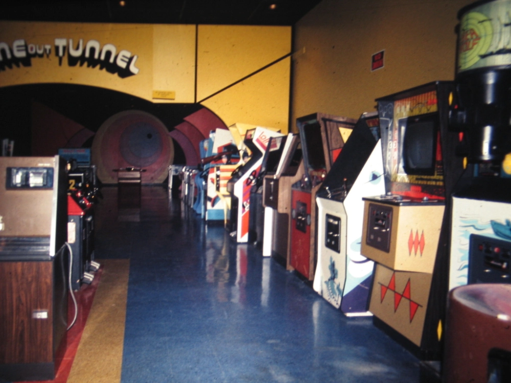
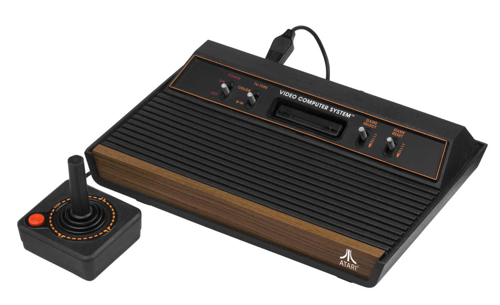
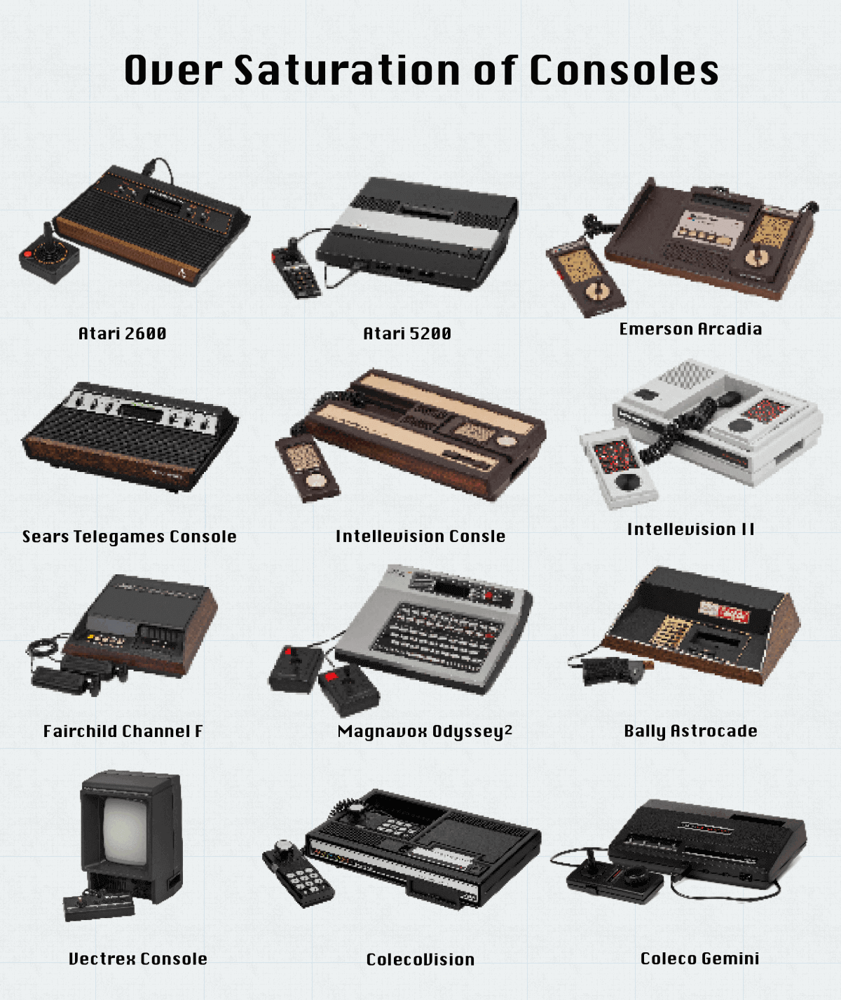
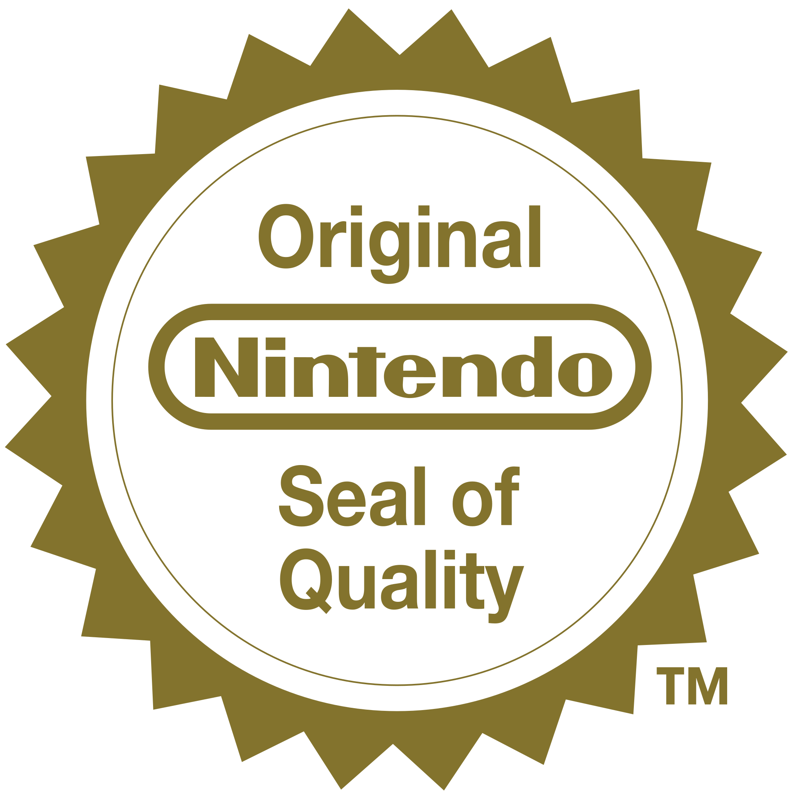
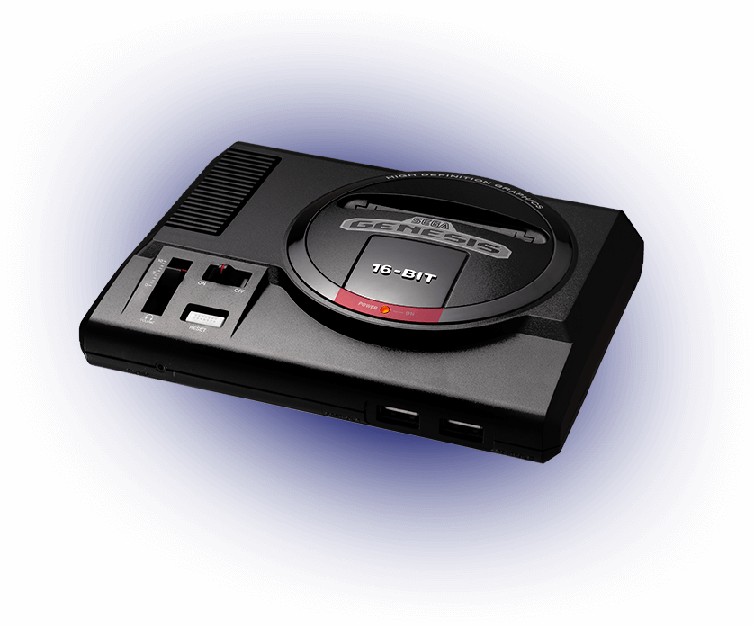
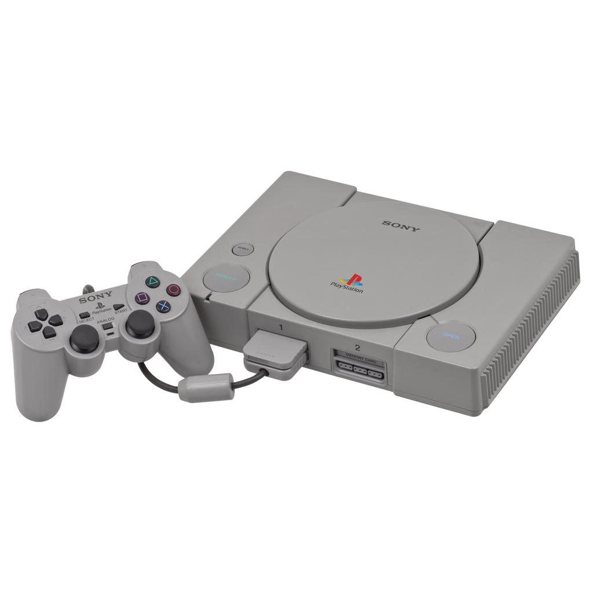
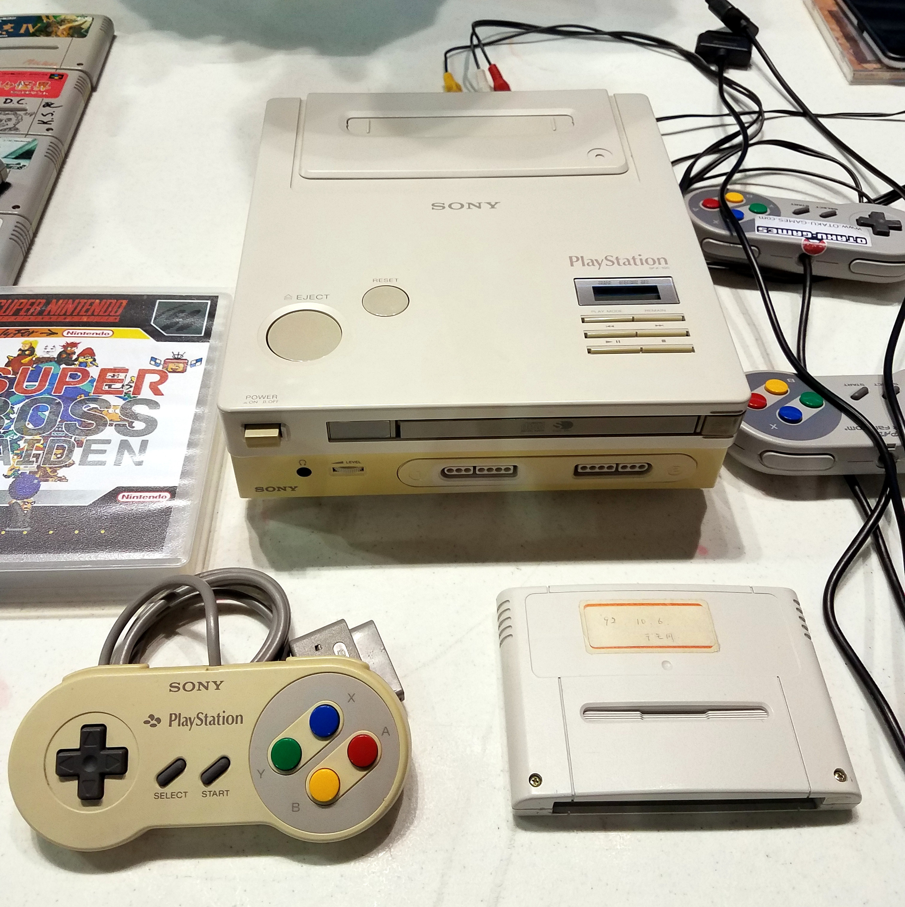

Tennis for two (1958)

Tennis For Two on a Super-Computer, October 18, 1958
Video games in the 1950s felt more like a novelty rather than the common thing of nowadays, as technology was rather primitive around this time.
Yet despite that, there was an earnest attempt at making the first ever video game. With that resulting in "Tennis For Two", made by William Highinbotham and Robert V. Dvorak.
It was made in about three weeks and was utilized for display at the Brookhaven National Laboratory's annual public exhibition for about three days, with it receiving a ton of attention (especially with high schoolers)
Return to Top
The Age of Arcades (1971-1978)
Arcades, 1971
Now this is where I consider to be the start of video games as a whole. This era is where a lot of the most recognizable games of all time originated from
Stuff like Pac-Man, Frogger, Galaga or even something as iconic as Pong originated in the arcades around this era
Games used to be quite simple and replayable with an emphasis on high scores in the 70s to give a reason for players to keep inserting quarters to machines (which was how games made money back then)
And some companies thought they could go further by asking "What if we took video games and find a way of playing them on a house?"
Return to Top
The start of home consoles (1977-1982)
Atari 2600, 1977
This right here is the first iconic home console, not the first one in general since that goes to the Magnavox Odyssey in 1972
But to me specifically, this felt like the moment where home consoles started to become well known
And that's shown with the controller itself. It's a stick with a singular button, that is it. But the reason it worked was due to how it replicated the arcade feel while also being different.
The goal of this console was to give a similar experience of playing in the arcade, but now on a more affordable and easier way
But with every success, there's always gonna be others that try to capitalize on its success. Which lead to the biggest issue with his era
There were way too many consoles at once
Consoles from the late 70s to very early 80s
The Intellivision 1 and 2, Colecovision, Vectrex, the Magnavox Odyssey and so much more popped up around this era and it became flat out tiresome
If you wanna see how bad it was, then check out this link of just how many consoles there were from 1972 to 1983
Every first gen consoleWith this insane ammount of consoles, it led to an oversaturation in the market, with quality control being thrown out the window since anyone could make a game and sell it
And this hell would reach a breaking point with the release of a certain game. One where its name sends shivers down gamers' spines
Return to Top
The video game crash of 1983
.jpg)
Atari games being buried
December 1982: E.T for the Atari 2600 releases
Around this time, gaming was starting to have a bit of oversaturation as I previously said. And Atari, around the holiday season, had high hopes for a game to blow up, that game being E.T the video game
The company had such high expectations for it that the creator of the game, Howard Scott Warshaw, only had about 6 weeks to fully finish the game
And around this time, the 2600 was becoming infamous for it having arcade ports that were nowhere near the quality that they were in the arcades like Pac-Man, Asteroids and Space Inavaders
So needless to say, they wanted the game to succeed big time, so much so they made over 5 million copies for it before it even released
The game comes out that year's christmas and buyers were confused by the fact that the game was beyond confusing on where to go, which lead to negative reception
Yet despite that, the game sold about 1.5 million copies, which sounds good, until you realize that Atari still had 3.5 million copies left, more than double of they actually sold
So with this blunder and many others around this era, it made the reputation of video games plummet, to the point where after E.T released, there was supposed burial of multiple Atari games in New Mexico
And for a bit, it felt like that was it for video games, a fad for its time. Or at least, that's what we originally thought
Return to Top
A new challenger aproaches
Nintendo (1889-Present)
Before I get into this point, I should say that Nintendo wasn't always a gaming company. For a long time as a matter of fact
Back in the late 1880's, Nintendo was known for making something called Hanafuda, which is a well known Japanese card game
After a while, they dabled into toy production from the 1960s to early to mid 1980s with a variety of products, including their own pong console named the Color TV Game 6 (even if they weren't the most successful)
But after the video game crash, Nintendo decided to fully enter the world of console gaming with the NES aka the Nintendo Entertainment System

NES, 1985
And with that system, came another thing that (sort of) fixed the issue with the oversaturation in terms of games, the Nintendo Seal Of Quality
By only allowing developers to make one every year, it made so the game that someone was making had to be of high quality to make profit, thus making the market more controlled
Plus alongside a plethera of games made by Nintendo like Super Mario Bros, The Legend Of Zelda, Metroid, Kirby's Adventure and many more did solidify them as thr kings of gaming for a while
Heck they even reinvented portable gaming with their second handheld (don't think I'd forget the Game & Watch), the Game Boy
Which included such experiences such as Tetris, Super Mario Land, Kirby's Dream Land and the big one, Pokemon

Game Boy, 1989
But with every success, there's gonna be some others who try to have that piece of the pie
And one in particular around the 90s went above and beyond to the point of being Nintendo's rival that era
Return to Top
Sega enters the fray
Sega consoles (1985-2001)
Console wars are something that shouldn't exist in recent times, especially this generation, but it was undeniable how massive the rivalry between Nintendo and Sega
Though it didn't start that way. Sega first released the Master System as their first proper console and while it did okay, it was nowhere near as popular as the NES (except in Brazil, which that place adores the Master System)
But it was the Sega Genesis (or Mega Drive in Europe) that really got them on the map
Due to the Sega's marketing having a more edgy vibe to them and just overall having a sense of being cool, is what gave them a certain trait that made them stand out from Nintendo's more family friendly "gaming is for everyone" approach
And that was replicated onto to their gaming mascot, Sonic The Hedgehog
And both him and Mario showed what made each console more appealing to certain people
While Nintendo and Mario had a feeling of timelessness, Sega and Sonic screamed the 90s era with its specific style of looking cool
And this led to many games like Streets Of Rage, Gunstar Heroes, Ristar and Golden Axe
However, after the initial popularity of the Genesis, Sega started making some bizarre financial decisions
Whether it was the Sega CD, the 32X feeling pointless due to the fact the Sega Saturn had already released, them announcing said Saturn and releasing it the same day making it a mess for retailers to prepare for it (not to mention a certain someone joining around that time)
This ammount of weird decisions is what kind of broke consumer trust with Sega, even if the their last console (Sega Dreamcast) was fantastic, it sold horribly and it only lasted 2 years before support from Sega stopped
Nowadays Sega are doing well with their games and merchandise, but this was the end of their console journey, no longer being a part of the big 3 console makers
But just who was that third competitor?
Return to Top
Sony's Playstation
Playstation (1994-Present)
Next to Nintendo, Sony is the most well known gaming console manufacturer out there
Creating genre defining games, having some of the iconic franchises and consoles of all time (with the PS2 being best seeling gaming system) and having an iron grip on the gaming landscape
Though history would be different if it wasn't for one simple betrayal
How Nintendo betraying Sony created a new competitor
Around the early 90s, Nintendo was gonna do a deal with Sony to create an add on to the SNES (their most recent console) that allowed it to play CDs
That Add on was going to be called the Nintendo Playstation (which sounds cursed nowadays)
Nintendo Playstation
But due to some ownership issues, Nintendo announced they were working with Philips on the conference they were supposed to announce they were doing that with Sony
But instead of giving up, Sony took what they had and created a new console for people to be into full of new original experiences
Plus it did give us this: